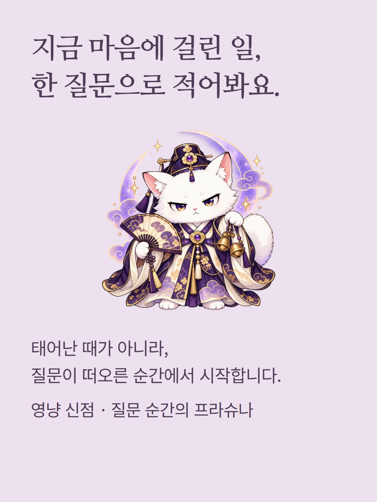
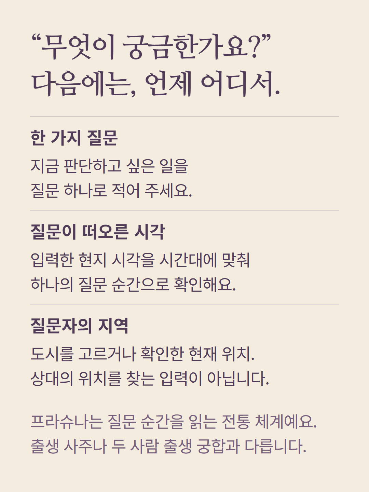
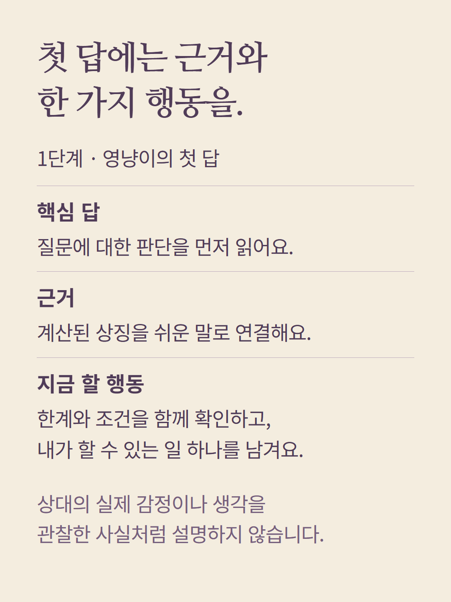
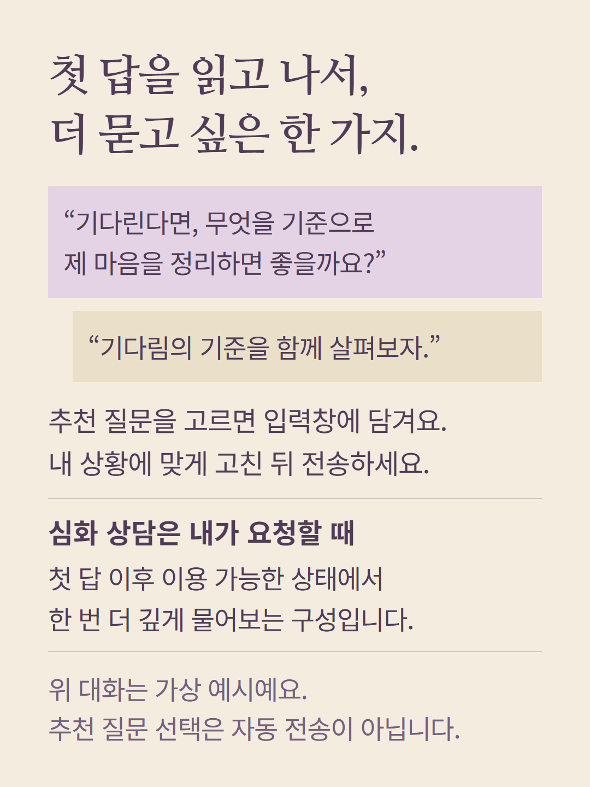
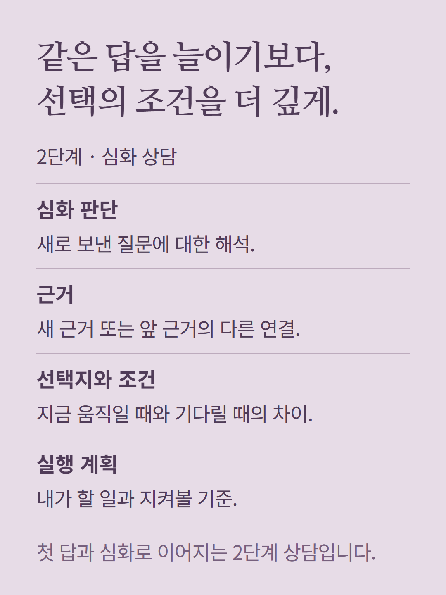
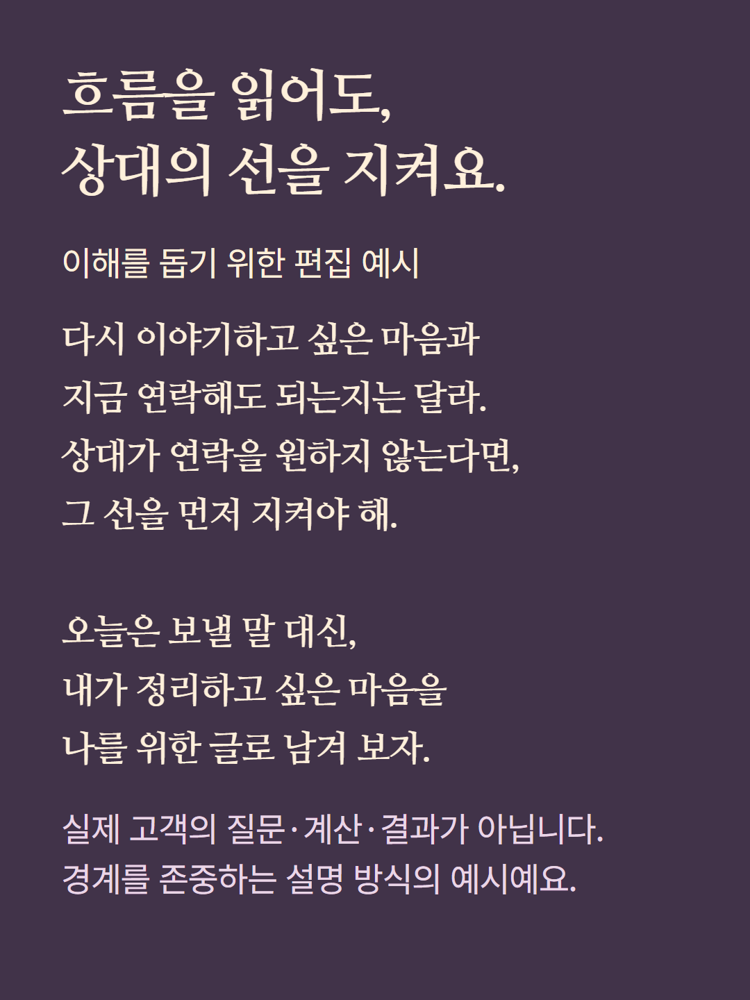
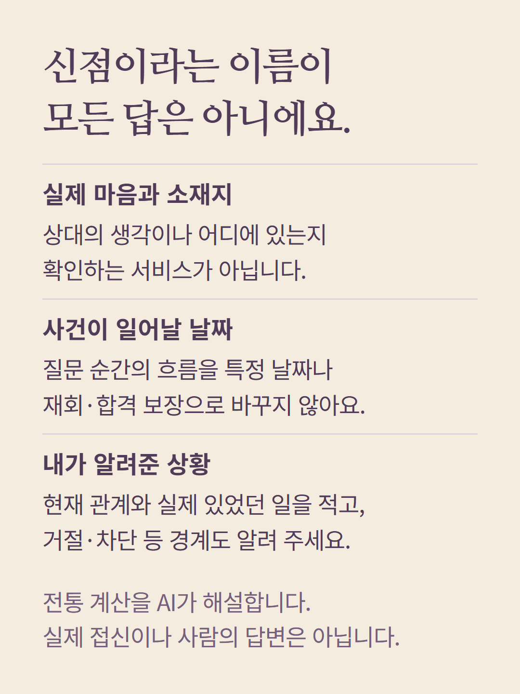
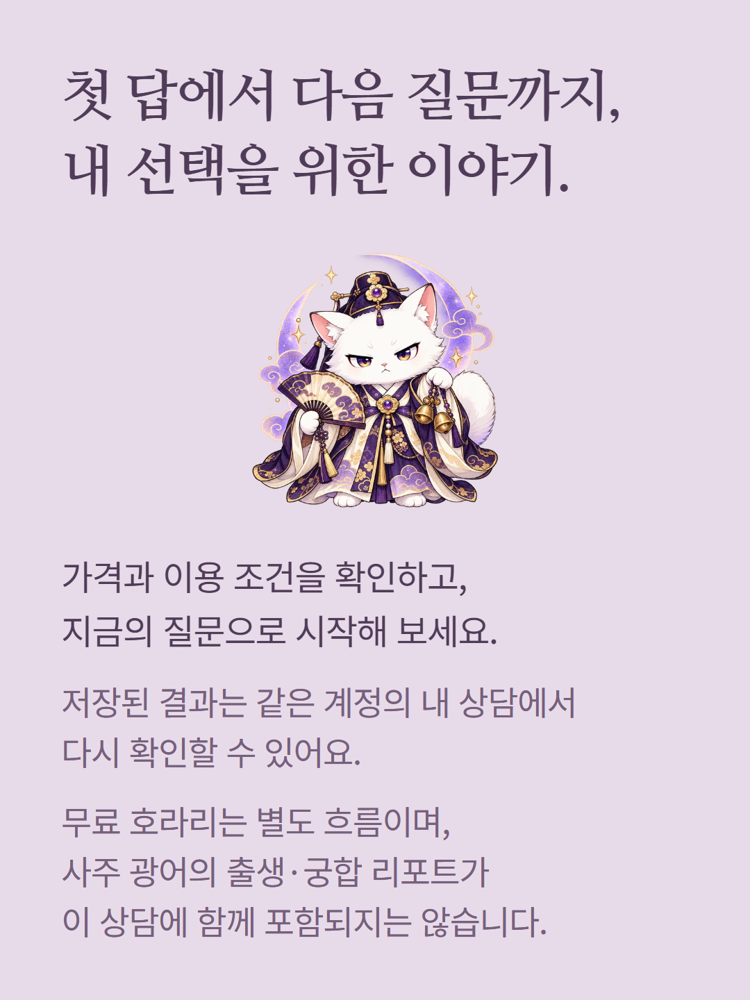

현재 영냥 신점은 질문 순간의 시각과 질문자의 지역을 바탕으로 프라슈나를 계산하고 AI가 상징적으로 해석하는 상담입니다. 출생 사주나 실제 접신으로 상대의 마음·위치를 확인하는 서비스가 아닙니다. 첫 답을 읽은 뒤 사용자가 심화 질문을 보내는 2단계 구성이며, 심화 질문은 해당 상담의 이용 가능 상태에서 한 번 요청합니다. 사주 광어의 출생 명식·궁합 리포트와는 다른 상품 구성입니다. 무료 호라리도 별도 흐름입니다. 안내 속 대화와 예시는 실제 고객 결과가 아닙니다. 가격과 이용 조건은 현재 준비 화면에서 확인해 주세요.